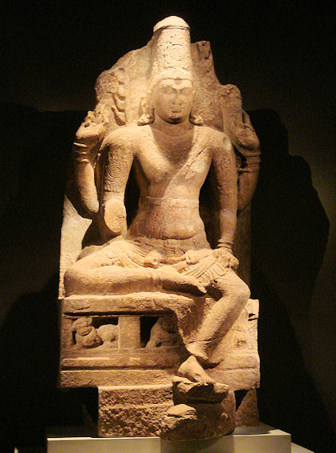
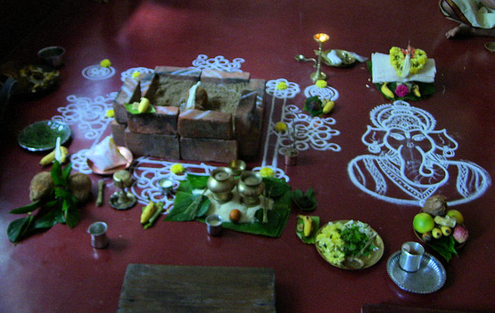

mailto:payer@payer.de
Zitierweise | cite as:
Payer, Alois <1944 - >: Sanskritkurs. -- 7. Lektion 7. -- Fassung vom 2008-11-24. -- URL: http://www.payer.de/sanskritkurs/lektion07.htm
Erstmals hier publiziert: 2008-11-22
Überarbeitungen: 2008-11-24 [Ergänzungen]
Anlass: Lehrveranstaltungen 1980 - 1984
©opyright: Dieser Text steht der Allgemeinheit zur Verfügung. Eine Verwertung in Publikationen, die über übliche Zitate hinausgeht, bedarf der ausdrücklichen Genehmigung des Verfassers
Dieser Text ist Teil der Abteilung Sanskrit von Tüpfli's Global Village Library
Falls Sie die diakritischen Zeichen nicht dargestellt bekommen, installieren Sie eine Schrift mit Diakritika wie z.B. Tahoma.
Die Devanāgarī-Zeichen sind in Unicode kodiert. Sie benötigen also eine Unicode-Devanāgarī-Schrift.
धर्मो जयति नधर्मः
सत्यं जयति नानृतम् |
क्षमा जयति न क्रोधो
देवो जयति नासुरः ||
dharmo jayati nādharmaḥ
satyaṃ jayati nānṛtam |
kṣamā jayati na krodho
devo jayati nāsuraḥ ||
Das Recht siegt nicht das
Unrecht,
Die Wahrheit siegt, nicht die Unwahrheit,
Nachsicht siegt nicht Zorn,
Gott siegt, nicht der Widergott.
Wochenspruch
| Schema: (Agens = kartṛ m. = कर्तृ) - direktes Objekt (karman n. = कर्मन्) - Verb z.B. rāmaḥ phalaṃ khādati = रामः फलं खदति = "Rāma isst (kaut) eine Frucht." brāhmaṇo devaṃ yajati = ब्राह्मणो देवं यजति = "Der (ein) Brahmane verehrt einen Gott mit einem Opfer (für jemand anderes):" |
| Steht das Verb im Parasmaipada oder Ātmanepada, so steht das direkte Objekt (karman n. = कर्मन्) im Allgemeinen im Akkusativ (Wenfall, dvitīyā f. = द्वितीया = "zweite Kasusendung"). |
|
|
|
| Maskulina auf | Akkusativ singular |
|---|---|
| -a: deva | devam देवम् |
| -i: kavi | kavim कविम् |
| -u: guru | gurum गुरुम् |
| Feminina auf | |
| -ā: devatā | devatām देवताम् |
| -i: śruti | śrutim श्रुतिम् |
| -ī: devī | devīm देवीम् |
| -u: dhenu | dhenum धेनुम् |
Akkusativ plural maskulinum der Stämme auf Vokal (Ausnahme: einsilbige Wurzelstämme auf langen Vokal): Längung des auslautenden Vokals + -n |
|
| Maskulina auf | Akkusativ plural |
| -a: deva | devān देवान् |
| -i: kavi | kavīn कवीन् |
| -u: guru | gurūn गुरून् |
Akkusativ plural femininum der Stämme auf Vokal (Ausnahme: einsilbige Wurzelstämme auf langen Vokal): Längung des auslautenden Vokals + -s |
|
| Feminina auf | Akkusativ plural |
| -ā: devatā | devatās देवतास् |
| -i: śruti | śrutīs श्रुतीस् |
| -ī: devī | devīs देवीस् |
| -u: dhenu | dhenūs धेनूस् |
| Akkusativ | ||||
|---|---|---|---|---|
| Maskulinum | Femininum | Neutrum | ||
| kim किम् |
sg. | kam कम् |
kām काम् |
kim किम् |
| pl. | kān कान् |
kās कास् |
kāni कानि |
|
| tad तद् |
sg. | tam तम् |
tām ताम् |
tad तद् |
| pl. | tān तान् |
tās तास् |
tāni तानि |
|
| etad एतद् |
sg. | etaम् / enam एतम् /एनम् |
etām / enām एताम् / एनाम् |
etad / enad एतद् / एनद् |
| pl. | etān / enān एतान् / एनान् |
etās / enās एतास् / एनास् |
etāni / enāni एतानि / एनानि |
|
| idam इदम् |
sg. | imam / enam इमम् & एनम् |
imām / enām इमाम् / एनाम् |
idam / enad इदम् / एनद् |
| pl. | imān / enān इमान् / एनान् |
imās /enās इमास् / एनास् |
imāni / enāni इमानि / एनानि |
|
Die Formen enam ) एनम् usw. gehören zum Stamm enad = एनद्, der nur in einigen Kasus Formen bildet. In den Kasus, in denen Formen dieses Stammes vorkommen, werden diese statt der Formen von etad = एतद् und idam = इदम् dann verwendet, wenn das damit Bezeichnete im Vorhergehenden bereits erwähnt wurde. z.B. ayaṃ devaḥ, enaṃ yajante. = अयं देवः | एनं यजन्ते || = "Er ist ein Gott. Man opfert ihm."
Der Akkusativ (dvitīyā f. =
द्वितीया) bezeichnet:
Weitere Verwendungen des Akkusativ werden später behandelt. |
Auslautendes -n
|
| Im Neutrum sind die Formen für Nominativ (prathamā) und Akkusativ (dvitīyā) identisch. |
| Endung des Nominativ / Akkusativ singular: -m z.B. phala n. = फल = "Frucht": Nom. / Akk. sg. phalam = फलम् |
| Endung des Nominativ / Akkusativ plural: -āni z.B. z.B. phala n. = फल: Nom. / Akk. pl. phalāni = फलानि |
Die 5. Präsensklasse bildet einen sogenannten athematischen Präsensstamm, d.h. der Präsensstamm lautet nicht wie bei den thematischen Präsensklassen (1., 4., 6., 10. Klasse) auf den "Themavokal" -a aus.
Die athematischen Präsensklassen haben
Stammabstufung, d.h. es gibt zwei Formen des Präsensstamms:
Der starke Stamm steht:
Alle anderen Formen haben den schwachen Präsensstamm. |
Bei athematischen Präsensstämmen lauten die
Primärendungen der 3. Person Plural:
|
| Starker Stamm: (meist) tiefstufige Wurzel
(wie angeführt) + -no- Schwacher Stamm: (meist) tiefstufige Wurzel (wie angeführt) + -nu- Vor vokalischen Endungen wird bei vokalisch auslautenden Wurzeln -nu- durch -nv- ersetzt, bei konsonantisch auslautenden Wurzeln wird vor vokalischen Endungen -nu- durch -nuv- ersetzt. |
Beispiele:
| Wurzel | Starker Stamm | Schwacher Stamm | Schwacher Stamm vor Vokal |
|---|---|---|---|
| āp 5 P आप् "erreichen, erlangen" |
āp-no 3.sg.P. āp-no-ti |
āp-nu | āp-nuv 3.pl.P.
āp-nuv-anti |
| aś 5 Ā अश् "erreichen, erlangen" |
aś-nu 3.sg.Ā. aś-nu-te |
aś-nuv 3.pl.Ā.
aś-nuv-ate |
|
| su 5 U सु "auspressen" |
su-no 3.sg.P. su-no-ti |
su-nu 3.sg.Ā. su-nu-te |
su-nv 3.pl.P.
su-nv-anti |
| Beachten Sie: śru 5 P |
śṛ-ṇo
3.sg.P. śṛ-ṇo-ti (das ṇ statt ṇ ist
regelmäßiger |
śṛ-ṇu | śṛ-ṇv
3.pl.P.
śṛ-ṇv-anti |
Lernen Sie folgende Wörter:
aś 5 Ā (aśnute) अश् अश्नुते : erreichen, gelangen zu, erlangen
āp 5 P (āpnoti) आप् आप्नोति : erreichen, erlangen
kup 4 P (kupyati) कुप् कुप्यति : zürnen
krudh 4 P (krudhyati) क्रुध् क्रुध्यति : zürnen
khād 1 P (khādati) खाद् खादति : kauen, essen
śru 5 P (śṛṇoti !) श्रु शृणोति : hören (etwas: Akkusativ, jemanden: Genetiv oder Akkusativ; über: Akkusativ; von jemandem: Genetiv, Ablativ, Instrumentalis)
su 5 U (sunoti) सु सुनोति : auspressen
soma m. सोम : Presstrank, Soma; Mond (Aus welcher Pflanze Soma gepresst wurde, ist bis heute umstritten).
Abb.: War das die vedische Somapflanze?: Fliegenpilz: Amanita muscaria
(L.) Lam.
[Bildquelle: Wikipedia, GNU FDLizenz]
phala n. फल : Frucht (auch im übertragenen Sinn: (karmische) Frucht einer Tat)
nṛtya n. नृत्य : Tanz
svarga m. स्वर्ग : Himmel
naraka m. नरक : Hölle (nach einer Hinduauffassung hat das Universum die Form eines Eis (Brahmāṇḍa m.n. ) ब्रह्माण्ड = "Ei Brahmā's): oberhalb der Erde sind sechs Himmel mit ansteigender Glückseligkeit, unterhalb der Erde sind sieben sog. pātāla n. ) पाताल, Wohnstätten der nāga m. ) नाग (Schlangen) und anderer mythischer wesen, darunter kommen 7 Höllen mit steigenden Qualen)
aṅga n. अङ्ग : Glied des Körpers, Bestandteil; auch = vedāṅga = वेदाङ्ग
gam 1 P (gacchati) गम् गच्छति : gehen (Gehört nach der einheimischeb Verbklassifikation zur Präsensklasse 1, ist aber in Wirklichkeit eine Bildung mit einem Präsensstammbildungssuffix -ccha-: gam » Tiefstufe (gm ») ga-ccha-ti)
A) Setzen Sie jeweils im Singular und Plural (sofern es keine Eigennamen sind) das direkte Objekt bzw. den Richtungsakkusativ ein:
1. brāhmaṇas ... yajati (deva, devī, viṣṇu, agni, devatā)
ब्राह्मणस् ... यजति (देव, देवी, विष्णु, अग्नि, देवता)

Abb.: Viṣṇu = विष्णु, 8./9. Jhdt.
[Bildquelle: Wikipedia, GNU FDLizenz]
2. gurus ... khādati (phala)
गुरुस् ... खादति (फल)
3. sādhus ... gacchati (svarga)
साधुस् ... गच्छति (स्वर्ग)
4. śūdrā ... gacchati (naraka)
शूद्रा ... गच्छति (नरक)
5. ... jayati (śūdra)
... जयति (शूद्र)
6. ... labhate (dhenu, paśu, phala)
... लभते (धेनु, पशु, फल)
B) Setzen Sie dien entsprechenden Verbformen ein:
1. sādhuḥ svargam ... (āp, gam, aś)
साधुः स्वर्गम् ... (आप्, गम्, अश्)
2. brāhmaṇaḥ somam ... (su) (2 Formen)
ब्राह्मणः सोमम् ... (सु)
3. sādhur gurum ... (śru)
साधुर्गुरुम् ... (श्रु)
4. devī ... (kup, krudh)
देवी ... (कुप्, क्रुध्)
C) Setzen Sie in den Übungssätzen B) Agens, Objekt und Verb in den Plural.
D) Setzen Sie ins Ātmanepada:
1. sunvanti.
सुन्वन्ति |
2. nayanti.
नयन्ति |
3. sunoti.
सुनोति |
4. yajati.
यजति |
Abb.: yajati = यजति
Vedisches Opfer = yajna m. = यज्न
[Bildquelle: Wikipedia, Public domain]
E) Bilden Sie zu allen bisher gelernten Nomina den Akkusativ (dvitīyā) sg. und pl.
F) Übersetzen Sie:
1. narakāṃś ca svargāṃś ca gacchanti.
नरकांश्च स्वर्गांश्च गच्छन्ति |
2. gurūṃs tu śṛṇvanti.
गुरूंस्तु शृण्वन्ति |
3. Śūdras erlangen einen Himmel.
4. Die Kṣatriyas verehren als Opferherren die Göttinnen mit Opfern.
5. Vaiśyafrauen verehren Gottheiten mit Opfern.
6. Der HERR zürnt.
7. śikṣā kalpo vyākaraṇaṃ niruktaṃ chando jyotiṣam aṅgāni. (Nach Kauṭilīya-arthaṣāstra 1.3.3.) Erklärung: chando = Nom,, Akk. sg. zu chandas n.)
शिक्षा कल्पो व्याकरणं निरुक्तं छन्दो ज्योतिषमङ्गानि |
8. Welchem Gott opfert dieser Brahmane?

Abb.: Welchem Gott opfert man hier? -- Antwort: dem Gaṇeśa (Gaṇapati) = गणेश (गणपति)
Gaṇapatihoma (Gaṇapatiyajna)
[Bildquelle: Rajaramraok, Wikipedia; Creative Commons
Attribution 3.0 License]
9. Was kaut dieser heilige Mann?
10. Was pressen diese (hier) aus?
11. Er ist der Lehrer. Auf ihn hört man (= hören sie).
Zu Lektion 8